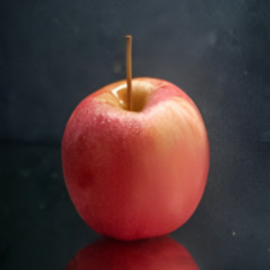

Maça Gala

Nome:
Maça Gala
Preço unidade:
R$1,78
Fornecedor:
VM Hortifruti
Código:
9845
Peso aproximado:
7g
Descrição:
A maçã Gala é uma variedade de maçã originária da Nova Zelândia, desenvolvida pela primeira vez na década de 1930. Ela é geralmente de tamanho médio a grande, com uma pele fina, cerosa e avermelhada, com polpa doce, suculenta e crocante. A maçã Gala é uma das variedades mais populares de maçã em todo o mundo, e é amplamente cultivada em muitas partes do mundo, incluindo os Estados Unidos, Europa e Ásia. Ela é apreciada como fruta fresca ou em saladas, mas também é usada na culinária, em tortas, sobremesas e molhos. A maçã Gala é uma excelente fonte de vitaminas, fibras e antioxidantes e é conhecida por seus benefícios para a saúde, incluindo a redução do risco de doenças cardíacas e a melhora da digestão. Ela é uma fruta saborosa e saudável que pode ser apreciada de muitas maneiras diferentes.